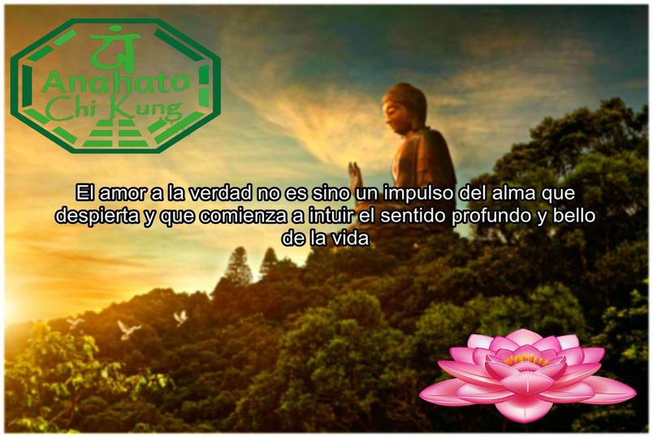

¿Que Es Chi-kung?
El Chi Kung o Qi Gong es una terapia medicinal de
origen chino que pertenece al mismo grupo que otras
terapias como el taichi o el reiki. Todas ellas proceden
de la tradición oriental y sustentan sus principios en la
importancia de canalizar de forma adecuada la energía vital
(Qi) a través de los diferentes meridianos que recorren
nuestro cuerpo. Según dichos principios, el buen estado
de la salud de cada uno dependerá de nuestra capacidad
para conseguir el correcto equilibrio entre la mente y
el cuerpo; y dicho bienestar se logra, principalmente,
a través de la meditación y del control de la respiración.
De hecho, la traducción literal de chi kung vendría a ser
‘el trabajo de la respiración’, ya que este método
terapéutico incide especialmente en la importancia de que
nuestra respiración sea consciente y acompañe a cada uno
de nuestros movimientos y pensamientos. También conocida
como “fuente de la juventud”, quienes la practican aseguran
que les ayuda a eliminar las tensiones y el estrés del día
a día y que es un auténtico caudal de paz que les aporta
salud y vitalidad. |
 |